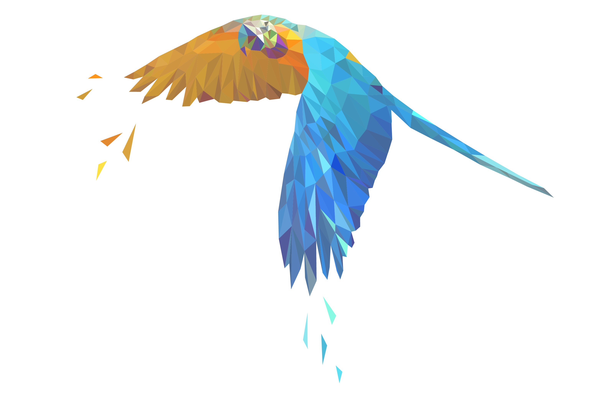
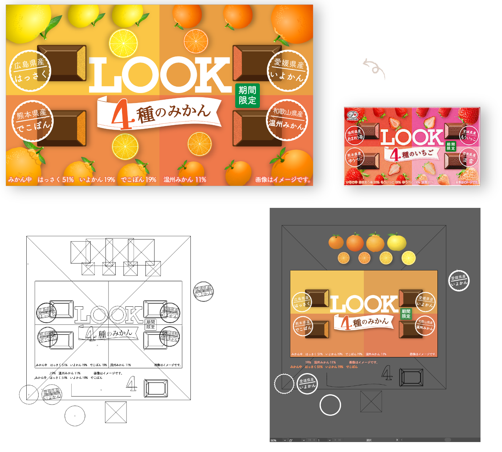
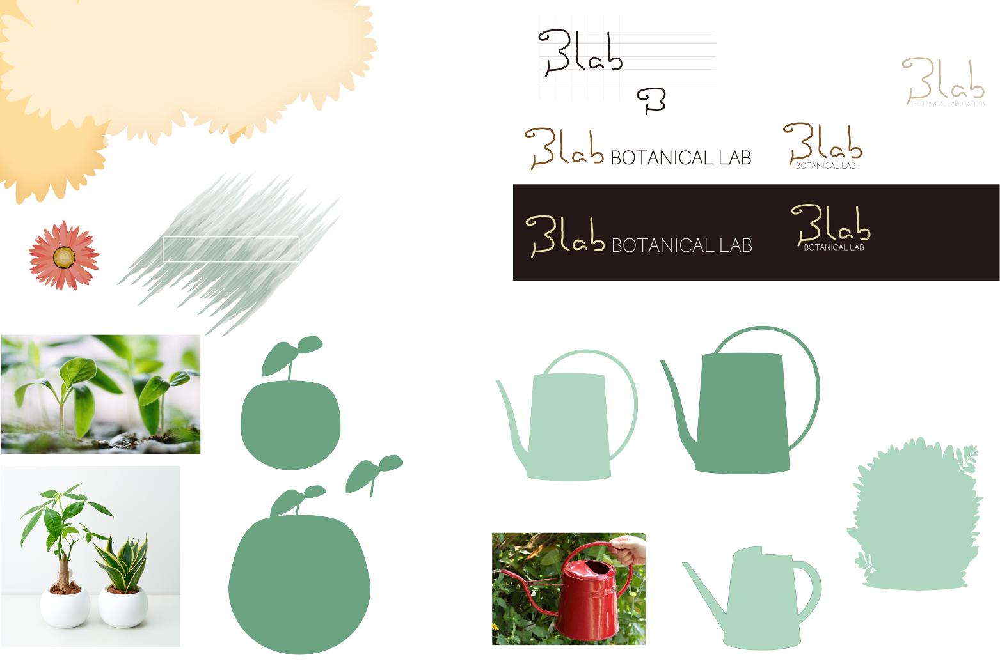
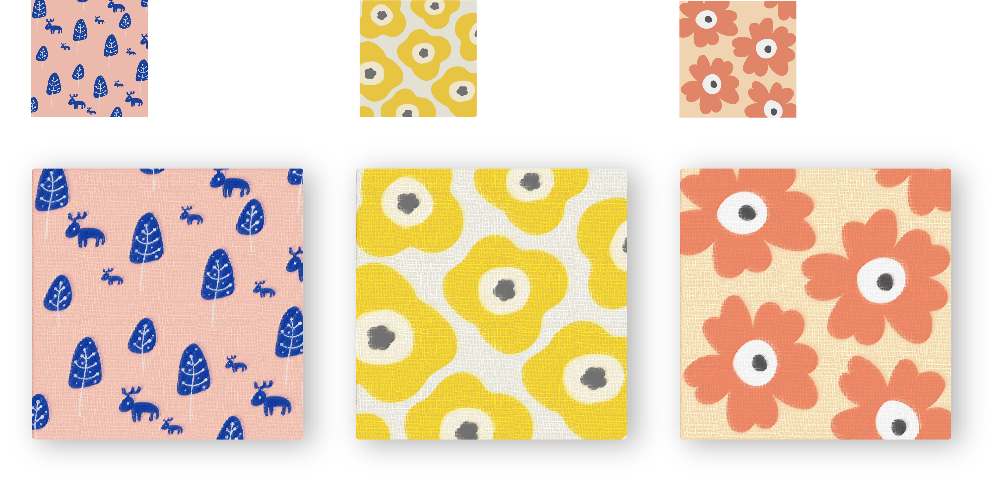
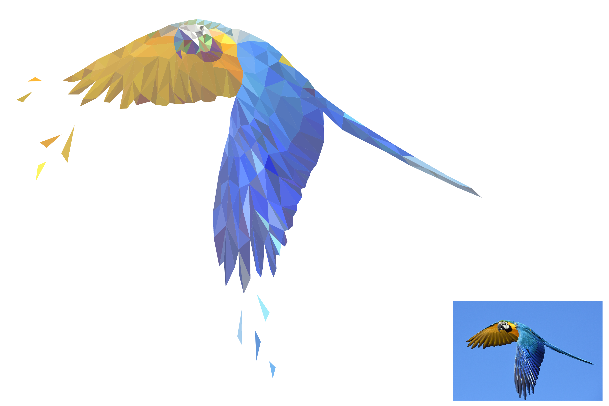
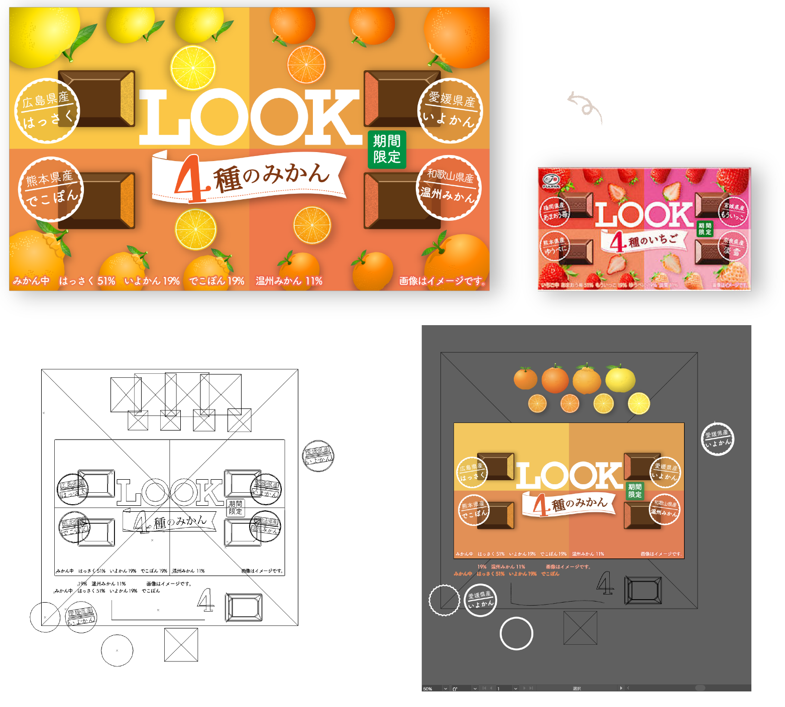
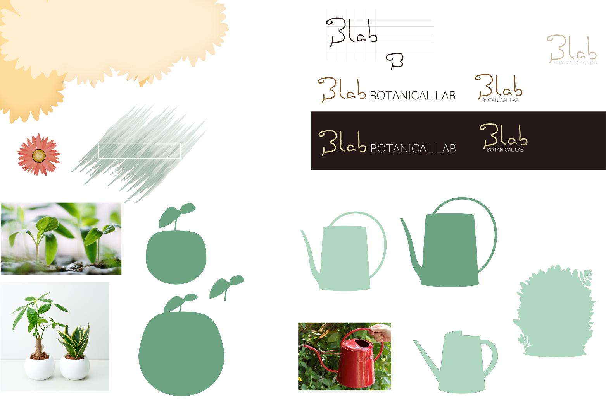
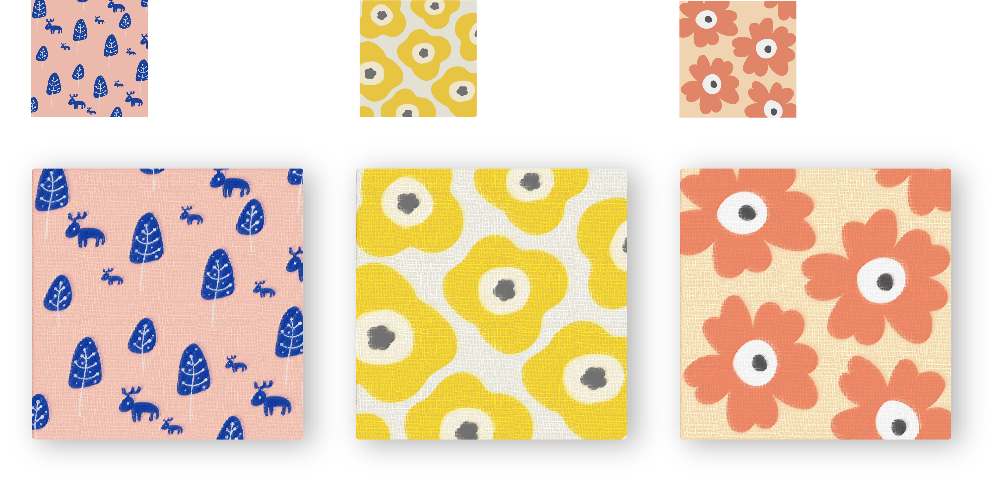
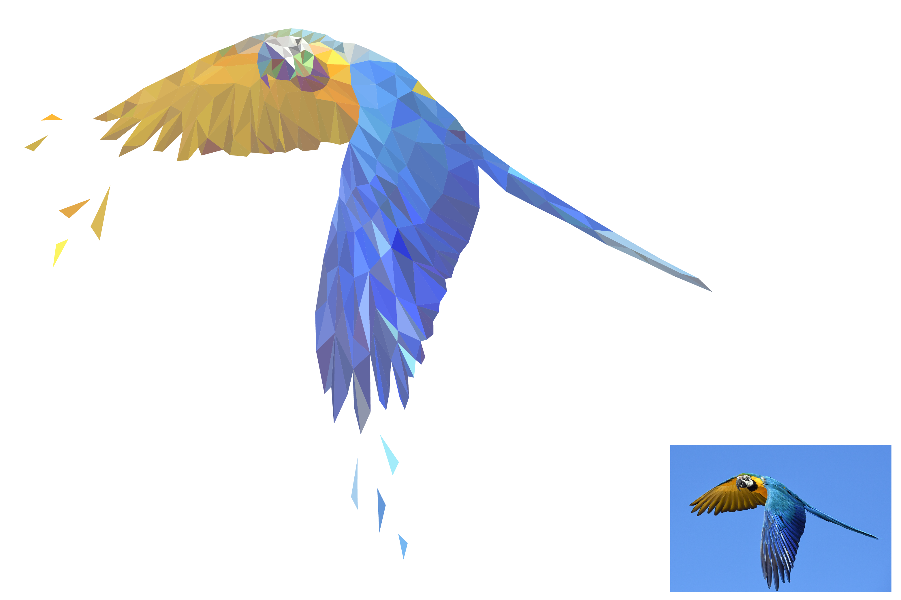

2021/12 Illustrator

ペンツールなどの基本ツールに加えてシェイプの形成、パスの変形などの練習の目的で作成しました。
果物のイラストは既存のものを使用しました 工程 : 全てのアウトラインを描く→色を塗る→背景設定→テキスト→フルーツを配置 
背景やロゴなどの素材は自作し、写真はフリー素材を使用しました。
工程 : デザインを決める→素材作成→写真とテキスト配置→ヘッダーフッター作成→余白など全体の調整

ブラシツールオプションを変更して試しながら作成しました。
工程 : ペンで絵を描く→塗る→背景設定→エフェクト

ライブペイントツールやオブジェクトの配色調整の勉強になりました。
工程 : ペンツールで線を引く→色を塗る→配色調整→飾りの三角を描く

イラストレーターの基礎学習
お菓子のパッケージデザイン
LOOKいちご味をトレースして、みかんバージョンを作成しましたペンツールなどの基本ツールに加えてシェイプの形成、パスの変形などの練習の目的で作成しました。
果物のイラストは既存のものを使用しました 工程 : 全てのアウトラインを描く→色を塗る→背景設定→テキスト→フルーツを配置 
WEBデザイン
さまざまなツールを使用して架空のWEBサイトを描いてみました背景やロゴなどの素材は自作し、写真はフリー素材を使用しました。
工程 : デザインを決める→素材作成→写真とテキスト配置→ヘッダーフッター作成→余白など全体の調整
作成素材

北欧風の柄
ブラシツールなど基本ツール練習として北欧風の柄を描きました。ブラシツールオプションを変更して試しながら作成しました。
工程 : ペンで絵を描く→塗る→背景設定→エフェクト

ポリゴン加工
写真をトレースしてローポリゴン風に加工しましたライブペイントツールやオブジェクトの配色調整の勉強になりました。
工程 : ペンツールで線を引く→色を塗る→配色調整→飾りの三角を描く
